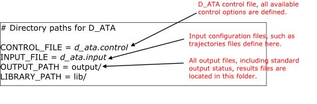

Ready, get set, go¶
This page tells you how to set D_ATA up and running.
How to obtain D_ATA
- D_ATA web site – Atomic interaction analysis tool. Click on REGISTRATION button.
- D_ATA User Manual (
PDF) - Version 1.0, November 2024. - D_ATA Tutorial - Online learning site, useful for new users.
To be able to use D_ATA you first need to register here. Successful registration will lead to you receiving a .tar.gz file (e.g. d_ata_1.0.tar.gz). Unpack or untar this for example in Linux:
$: tar -xzvf d_ata_1.0.tar.gz
Note
The number 1.0 refers to the software version, which can be different if a newer version is released.
This will produce a directory d_ata_1.0 which contains a d_ata.control (D_ATA control file), d_ata_path and a README.md file (amongst other files). You then need to compile to produce the executable d_ata as follows
$: cd d_ata_1.0
$: cd source
$: make
This will create the d_ata executable file in the D_ATA home directory.

General guidance for running D_ATA
The d_ata_path is called the path entry file and must always locate in the D_ATA home directory where d_ata executable file is located.
The path entry file contains information about the locations for various file components that are needed when running D_ATA program.
{kind=link}
Note
File names and their locations are set to defaults. They can be changed according to your needs.
Inspect d_ata.input and d_ata.control files. You will notice an example1.xyz structure has already been included (from example/ folder) with the necessary control options being set in the d_ata.control file. This example is an ethanoic acid liquid systems consist of several trajectory frames derived from a molecular dynamics simulations.
To run D_ATA program, just type
$: ./d_ata
The program will then read the example structure, one frame at a time, and reports on screen about the types of interactions detected.
Once the run is completed, inspect the results output files produced in the output/ folder. The type and number of results files depend on the input structure. In this example, there are five different output files.
- Standard status output file, d_ata.output
- The chemical structure file (csf), d_ata.csf, that shows atoms’ chemical identities.
- The general results output file, d_ata.results.
- Count profile for a number of different modes of interactions with respect to MD time. (count_XX_XX_XX.results).